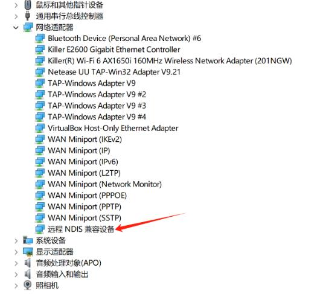

中文
中文MaixCAM MaixPy 无屏幕版快速开始
关于本页文档
正如快速开始所述，开发时强烈推荐购买带屏幕版本，会有更好的开发体验，包括使用内置的 APP，以及使用 MaixHub 应用商店的 APP，以及方便调试（比如常用设置可以直接触摸点击界面完成，可以实时在屏幕看到图像等）。
当然，如果你实在没有条件购买带屏幕的，或者你在量产时需要无屏幕的版本，请看本文。
获得 MaixCAM 设备
- MaixCAM：在 Sipeed 淘宝 或者 Sipeed 速卖通 店铺购买 MaixCAM 。
上手配置
准备 TF 镜像卡和插入到设备
如果你买的套餐里面有 TF 卡，里面已经有出厂镜像了，如果出厂时 TF 卡没有安装到设备，需要先小心打开外壳（注意里面有排线连接不要扯断了），然后插入 TF 卡。另外因为出厂的固件可能比较老旧，务必按照升级和烧录系统先将系统升级到最新版本，否则可能会遇到某些应用 和 API 无法使用的问题。
如果没买 TF 卡，则需要将系统烧录进自备的 TF 卡中，烧录方法请看升级和烧录系统，然后再安装到板子。
上电开机
使用 Type-C 数据线连接 MaixCAM 设备给设备供电，等待设备开机。
首先：保证 USB 线材质量足够好，以及电脑 USB 端口质量够好（供电 >= 5v 500mA，抗干扰能力正常）。
第一次等待 20 秒左右，然后电脑会出现一个或者两个虚拟网卡设备（可以在电脑的网络管理器看到）。
如果虚拟网卡设备：
- 请确认购买了配套的 TF 卡，如果确认有 TF 卡，并且已经插入到设备，可以尝试更新到最新的系统。
- 如果你没有购买 TF 卡套餐，你需要按照升级和烧录系统的方法烧录最新的系统到 TF 卡。
- 请确认 USB 有没有松动，以及 USB 线材质量，可以换一根质量好点的线尝试。
- 请确认 USB 口供电足够，可以换一个 USB 口，或者有条件在其它电脑试试。
登录终端
如果需要登录终端, MaixCAM 默认用户名是 root，密码是 root。
准备连接电脑和设备
为了后面电脑（PC）能和 设备（MaixCAM）通信，我们要让它们在同一个局域网内，提供了两种方式，我们首先使用方法一：
- 方法一：有线连接， 设备通过 USB 线连接到电脑，设备会虚拟成一个 USB 网卡，这样和电脑就通过 USB 在同一局域网了，遇到问题也可以在 FAQ 中找常见问题。
方法二在不同电脑系统中驱动安装方法：
默认会有两种 USB 虚拟网卡驱动（NCM 和 RNDIS驱动），以满足不同系统的需求：
- Windows: windows 所有系统会自动安装 RNDIS 驱动， 仅 Win11 会自动安装 NCM 驱动，两种驱动有一个能用就行（NCM 速度比 RNDIS 速度快）。
- 打开任务管理器 -> 性能，可以看到一个虚拟的以太网，并且可以看到 ip 比如
10.131.167.100是电脑的 ip, 设备的 ip 是最后一位改为1即10.131.167.1。如果是 Win11 则会看到两个虚拟网卡，随便选择一个 IP 使用即可。 - 另外也可以打开电脑的
设备管理器（搜索栏搜索设备管理器）， RNDIS 和 NCM 驱动被正确安装的效果，一个能用就行：

- 打开任务管理器 -> 性能，可以看到一个虚拟的以太网，并且可以看到 ip 比如
- Linux: 无需额外设置，插上 USB 线即可。 使用
ifconfig或者ip addr查看到usb0和usb1网卡，两个 IP 都可以使用，注意 这里看到的 ip 比如10.131.167.100是电脑的 ip, 设备的 ip 是最后一位改为1即10.131.167.1。 - MacOS: 在
系统设置->网络里面查看到usb网卡，注意 这里看到的 ip 比如10.131.167.100是电脑的 ip, 设备的 ip 是最后一位改为1即10.131.167.1。
- 方法二：无线连接， 设备使用 WiFi 连接到电脑连接的同一个路由器或者 WiFi 热点下（WiFi 如果出现画面卡顿或者延迟高的问题可以使用有线连接。），连接无线热点方式有两种：
- 修改 TF 的 boot 分区中的
wifi.ssid和wifi.pass文件，重启即可连接。修改方法：- 如果你已经了解 SSH， 可以通过 ssh 连接到设备（如果有线连接可用）修改
/boot目录下文件。 - 也可以按照前面升级系统的方式进入升级模式后电脑会出现一个 U 盘，然后修改里面的文件即可，注意修改完要先 弹出U盘 再重启。
- 也可以直接用 读卡器，电脑会出现一个U盘，修改其中的
wifi.ssid和wifi.pass文件即可，注意修改完要先 弹出U盘 再重启。
- 如果你已经了解 SSH， 可以通过 ssh 连接到设备（如果有线连接可用）修改
- 如果你有线已经可以使用，按照下一步已经可以使用 MaixVision 运行代码了，可以修改例程
tools/wifi_connect.py中的 SSID 和 PASSWORD 然后运行即可。
- 修改 TF 的 boot 分区中的
开发环境准备
- 首先保证上一步电脑和设备已经在同一个局域网中了。
- 下载 MaixVision 并安装。
- 使用 Type-C 连接设备和电脑，打开 MaixVision，点击左下角的
“连接”按钮，会自动搜索设备，稍等一下就能看到设备，点击设备有点的连接按钮以连接设备。
如果没有扫描到设备， 也可以在 FAQ 中找到解决方法。
这里有 MaixVision 的使用示例视频:
联网
首次运行需要连接网络，以激活设备安装运行库。
如果没有路由器可以用手机开一个热点。
MaixVision 修改例程 tools/wifi_connect.py 中的 SSID 和 PASSWORD 然后运行即可。其它连接 WiFi 的方法看前面的介绍。
升级运行库
这一步很重要 ！！！ 这一步如果不做好，其它应用和功能可能无法运行（比如闪退等）。
- 首先保证上一步连接 WiFi 已经完成，并且获取到 IP 地址能访问公网。
- 运行 MaixVision 例程里面的
tools/install_runtime.py来安装最新的运行库。
如果显示Request failed 或者请求失败，请先检查网络是否已经连接，需要能连接到互联网，如果还不行，请拍照联系客服处理即可。
运行例程
点击 MaixVision 左侧的示例代码，选择一个例程，点击左下角运行按钮将代码发送到设备上运行。
比如：
hello_maix.py，点击运行按钮，就能看到 MaixVision 终端有来自设备打印的消息，以及右上角出现了图像。camera_display.py，这个例程会打开摄像头并在屏幕上显示摄像头的画面。
from maix import camera, display, app
disp = display.Display() # 构造一个显示对象，并初始化屏幕
cam = camera.Camera(640, 480) # 构造一个摄像头对象，手动设置了分辨率为 640x480, 并初始化摄像头
while not app.need_exit(): # 一直循环，直到程序退出（可以通过按下设备的功能按键退出或者 MaixVision 点击停止按钮退出）
img = cam.read() # 读取摄像头画面保存到 img 变量，可以通过 print(img) 来打印 img 的详情
disp.show(img) # 将 img 显示到屏幕上
yolov5.py会检测摄像头画面中的物体框出来并显示到屏幕上，支持 80 种物体的检测，具体请看YOLOv5/YOLOv8/YOLO11 物体检测。
其它例程可以自行尝试。
如果你使用相机例程遇到了图像显示卡顿，可能是网络不通畅，或者 USB 线质量或者主机 USB 质量太差造成，可以更换连接方式或者更换线缆、主机 USB 口或者电脑等。
安装应用到设备
上面是在设备中运行代码，MaixVision 断开后代码就会停止运行，如果想让代码出现在开机菜单中，可以打包成应用安装到设备上。
点击 MaixVision 左下侧的安装应用按钮，填写应用信息，会将应用安装到设备上，然后在设备上就能看到应用了。
也可以选择打包应用，将你的应用分享到MaixHub 应用商店。
默认例程没有显式编写退出功能，进入应用后按下设备的功能按键即可退出应用。（对于 MaixCAM 是 user 键）
如果想让程序开机自启动，可以修改并运行例程tools/set_autostart.py即可。